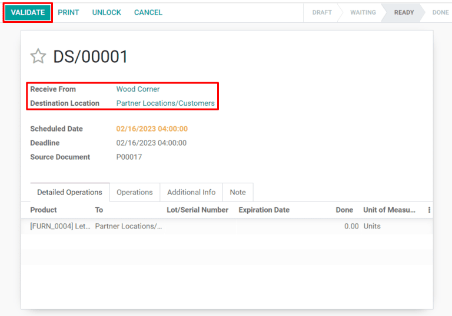

Use dropshipping to ship directly from suppliers to customers¶
Dropshipping is an order fulfillment strategy that allows sellers to have items shipped directly from suppliers to customers. Normally, a seller purchases a product from a supplier, stores it in their inventory, and ships it to the end customer once an order is placed. With dropshipping, the supplier is responsible for storing and shipping the item. This benefits the seller by reducing inventory costs, including the price of operating warehouses.
Configure products to be dropshipped¶
To use dropshipping as a fulfillment strategy, navigate to the app and select . Under the Logistics heading, click the Dropshipping checkbox, and Save to finish.
Next, go to the app, click and choose an existing product or select Create to configure a new one. On the Product page, make sure that the Can be Sold and Can be Purchased checkboxes are enabled.

Click on the Purchase tab and specify a vendor and the price that they sell the product for. Multiple vendors can be added, but the vendor at the top of the list will be the one automatically selected for purchase orders.

Finally, select the Inventory tab and enable the Dropship checkbox in the Routes section.

Fulfill orders using dropshipping¶
When a customer completes an online purchase for a dropshipped product, a sales order will be automatically created with an associated request for quotation (RFQ) for the supplier. Sales orders can be viewed in the app by selecting . Click the Purchase smart button at the top right of a sales order to view the associated RFQ.
Tip
Dropship sales orders can also be created manually through the app by selecting and adding a product configured for dropshipping.
Once the RFQ is confirmed, it becomes a purchase order and a dropship receipt is created and linked to it. The receipt can be viewed by clicking the Receipt smart button in the top right corner of the purchase order form.

The dropship receipt will list the supplier in the Receive From section and the customer in the Destination Location section. Upon delivery of the product to the customer, click on the Validate button at the top left of the dropship receipt to confirm the delivered quantity.
To view all dropship orders, simply navigate to the Overview dashboard and click the teal # TO PROCESS button on the Dropship card.